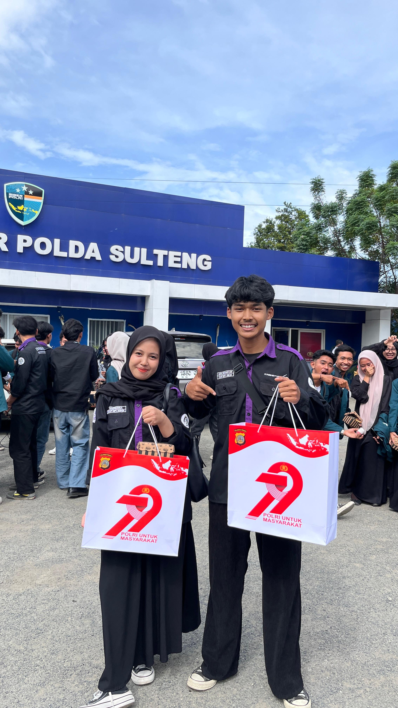
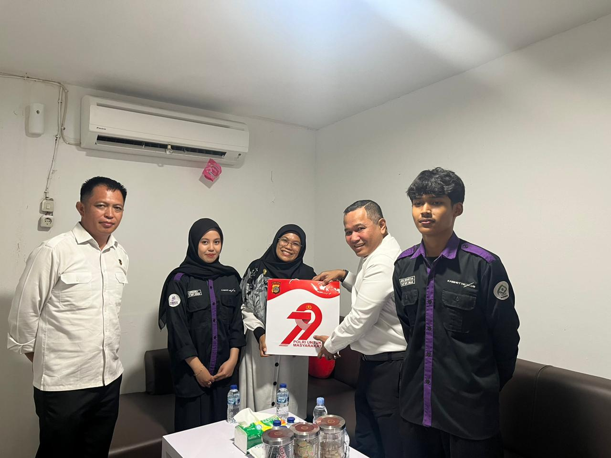

Eco Travel
Mobile App

Kunjungan Edukatif
- IT Xperience merupakan program kunjungan edukatif yang diselenggarakan oleh Himpunan Mahasiswa Informatika dengan tujuan memberikan wawasan dan pengalaman langsung kepada mahasiswa terkait dunia kerja serta perkembangan teknologi di lingkungan profesional.

Cyber Security
- Pada pelaksanaan kali ini, mahasiswa melakukan kunjungan ke Bagian Cyber Security (Subdit Cyber Crime) di Polda Sulawesi Tengah.